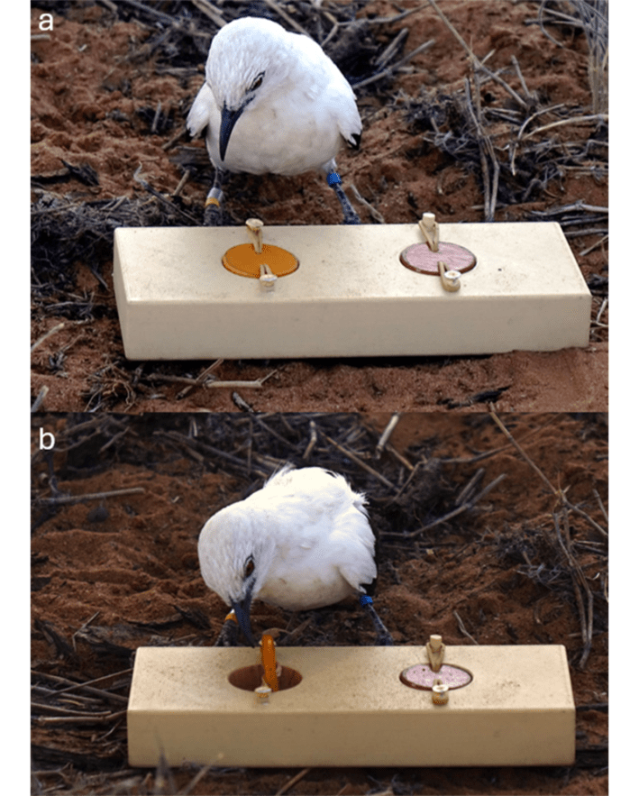

This articleoriginally appeared in Knowable Magazine.
On a blazing hot day in South Africa, female southern pied babblers can’t think straight. The medium-sized black-and-white birds are trying to get at tasty mealworms behind a see-through barrier. On cooler days, the birds can quickly figure out that all they have to do is go around the small wall of plastic. But when the mercury goes up, the birds just keep stubbornly pecking at the barrier.
That experiment is part of a growing body of research showing that animals get their minds muddled during heat waves. When it’s hot outside, birds struggle to learn, dogs bite more often, goat-like chamois pick fights. This is bad news not just for those who get on Fido’s toasted nerves. If the animals can’t stay alert enough to find food or avoid predators, their chances of survival go downhill, says Amanda Ridley, a behavioral ecologist at the University of Western Australia who coauthored the pied babbler study.
With climate change making heat waves more common, such cognitive impairments across the animal kingdom could ripple through entire ecosystems, putting already fragile species at greater risk. If pollinators forget which flowers to visit, crops and wild plants may fail. If birds can’t find food as easily, their young may not survive. And on a warming planet, a sharp mind is particularly vital. “A changing climate means that your ability to behaviorally adapt is even more important,” Ridley says.
Hotheaded
There is plenty of evidence that animals are affected by heat. Birds, for example, spend less time looking for food and feeding their young; they even sing less. Instead, they’ll sit around for hours with wings spread to dissipate the heat, and pant with their beaks wide open. Some animals retreat to shade or hide in cool burrows—again, skipping meals. Bees, meanwhile, splash their faces with droplets of water midflight when the weather is sizzling. This way, “they get convective cooling for their brain,” says Emily Baird, a neuroscientist at Stockholm University.
Some of the first hints that hot temperatures can mess up minds, however, came from studies on humans. Back in the 1800s, Belgian astronomer Adolphe Quetelet noticed that violent crime in France peaked in the summer. Later studies linked high temperatures with gun violence, mental-health-related hospital admissions, suicide, and gambling. When it’s hot, people have trouble making decisions, and their memory suffers. For students at schools without air conditioning, a school year just one degree Fahrenheit hotter reduces test scores by 1 percent, a study found.
Increasingly there’s evidence that other species may also be more aggressive when mercury shoots up. A 2023 study that combed through nearly 70,000 reports of dogs biting people across eight United States cities, from Chicago to Baltimore, found that such incidents were more likely to happen on hot, sunny and smoggy days. The risk was 10 percent higher on a 90-degree day than on a 60-degree day—and not only because people are more apt to venture out for walks when the sun is shining (the researchers controlled for seasonal effects in their data).

FRESH FISH: Golden julie fish like the one in this photo will dial up their aggressive posturing toward images of themselves in a mirror when water temperatures warm. Credit: ipman65 / Adobe Stock.
Still, the scientists were unable to determine whether dogs get more aggressive as it gets hot, or if cranky humans provoke more attacks. “It’s likely that both humans and dogs get stressed and more irate at higher temperatures,” said Clas Linnman, a neuroscientist at the University of Miami and a coauthor on the study.
And it’s not only dogs: A 2025 study out of China showed that many animals, including snakes and cats, are more inclined to bite people when it gets hot.
Animals also seem to lose their cool with each other, especially if there is food involved. Scientists used binoculars and spotting scopes to spy on wild goat-like chamois that feed on protein-rich plants on the slopes of the Italian Apennine Mountains. More than 1,600 hours of observations over two summers revealed that when temperatures rose from 54 to 64 degrees Fahrenheit, vegetation grew scarcer, and chamois aggression in turn shot up. The animals became territorial over patches of food, they assumed threatening postures, chased each other—attacks that, at times, escalated. The study authors predict that chamois aggression will go up 50 percent by 2080 due to climate change.
VIDEO
Credit: Knowable Magazine / YouTube
The small tropical fish called a golden julie also gets confrontational in the heat. Ordinarily, when a golden julie is placed in front of a mirror, it sees its reflected image as a stranger and shows some hostility, raising its fin, for example. But if the normally 78-degree water is raised to a hot 84 degrees, the fish is more likely to get aggressive, and may bite and slap its tail against the mirror, as it tries to scare or attack the reflected image.
Cognitive problems
Heat waves can also hamper the ability of animals to learn, as Ridley and her colleagues observed with the southern pied babblers. In one of their experiments, the birds were presented with a simple wooden block with two holes drilled in it, each covered with a lid. If the bird pecked at the lid, it would rotate, revealing either an empty hole or a tasty mealworm (the babblers, Ridley says, “are highly motivated by mealworms”). One lid was dark, and the other a lighter shade of the same color. During heat waves, the birds needed twice as many trials to learn that the mealworm was always hidden under the lid of the same shade.

HIDDEN SNACKS: A wild pied babbler investigates a contraption that holds a tasty mealworm beneath one of two lids. The birds can learn to associate a lid of a particular color shade with the mealworm treat, but when it’s very hot, it takes the birds much longer to do so. Credit: C. Soravia et al / Royal Society Open Science 2025.
Another group of scientiststested zebra finches, pretty Australian songbirds, and discovered that if temperatures are high, they too have cognitive problems. When figuring out how to get a mealworm out of a see-through tube with an opening at one end, they would just keep pecking on the tube, says study coauthor Elizabeth Derryberry, an evolutionary biologist at the University of Tennessee, Knoxville. It’s the bird equivalent of “banging your head against a brick wall,” she says.
Adding to the tally, several years ago researchers showed that when the heat is on, mice have trouble finding their way around a maze and forget objects they’ve seen the day before. More recently, researchers found that male guppies, popular aquarium fish, also have trouble getting through a maze after spending several days in heat-wave-like 90-degree water, even if the prize for getting it right is a virgin female—which they tend to find particularly attractive.
For animals such as fish and insects that can’t control their body temperature, heat waves could be particularly detrimental. “Changes in air temperature will affect brain temperature,” says Baird. A hotter brain could hinder the functioning of nerves, and that, she says, “might affect sensing, memory, and learning.”
When Baird and colleagues tried to teach bumblebees to associate sweet sucrose with the color blue and bitter quinine with yellow, most of the bumblebees learned the trick at 77 degrees, but fewer than half managed to do so at 90 degrees. Such impaired cognition could spell trouble in the field: If the insects forget which flowers they should pollinate (in the case of bumblebees, these include tomatoes and blueberries) or how to get back home with nectar, not only will the pollinators suffer, but human agriculture too, Baird says.
Heat appears to dangerously diminish animal vigilance as well. In Ridley’s recent experiments, once mercury in the Kalahari Desert reached 96 degrees Fahrenheit, pied babblers lost their ability to properly respond to predators. In their studies, researchers lured birds toward a mystery shape covered in a sandy-colored blanket, using worms as bait. Once a babbler approached, the scientists would reveal what was hidden underneath: either a taxidermied cat-like carnivore called a genet, or a similarly sized and colored wooden box. The birds got scared of the genet in cooler temperatures—they’d call out, scan their surroundings, or simply flee. But once it got hot, they behaved similarly whether they were facing the carnivore or the box. Ridley suggests that this could translate into higher chances of fatal predator attacks as heat rises, which could harm populations of babblers and other prey species.
These studies are not just abstractions. In the Kalahari, where southern pied babblers use their wits to search for worms, temperatures are rising twice as fast as the global average. In tropical rivers, where male guppies seek mates, heat waves are growing longer and more intense. It’s the same story across much of the planet—temperatures climb, and animal thinking becomes strained, potentially putting species at risk. The effects may be magnified in certain areas such as cities, which often exhibit even warmer temperatures than non-urban areas. If anything, Ridley says, “We are probably underestimating the impacts of increased heat on animal minds.” 
This articleoriginally appeared inKnowable Magazine, a nonprofit publication dedicated to making scientific knowledge accessible to all.Sign up forKnowable Magazine’s newsletter.
Lead image: Mathias and SN / Adobe Stock